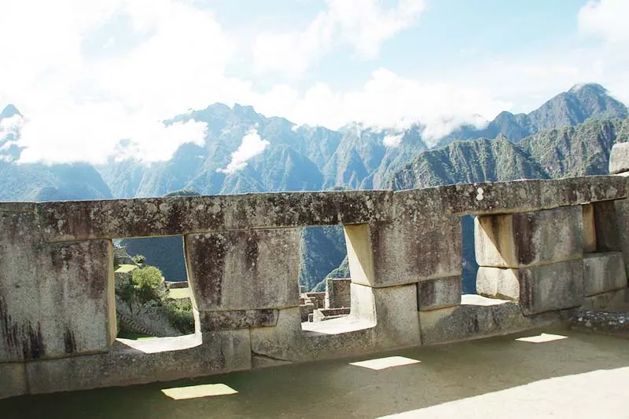

Machu Picchu, Peru
Constructed: c. 1450 CE
Machu Picchu is an ancient Incan citadel located high in the Andes Mountains of Peru. Built during the reign of Emperor Pachacuti, it features sophisticated dry‑stone construction, terraced fields, and ceremonial temples. Hidden from the outside world for centuries, it is now one of the most iconic archaeological sites on Earth and a UNESCO World Heritage treasure.
Type: Incan Architecture / Archaeological Site